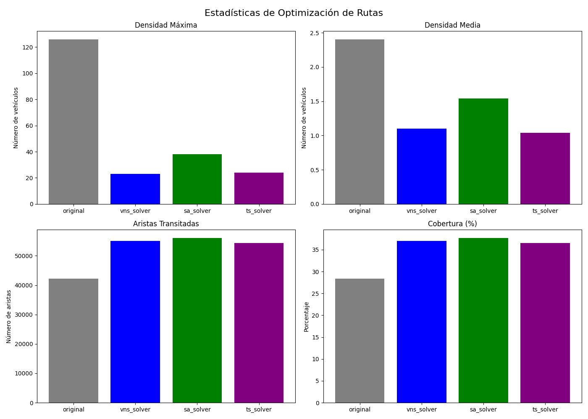

Dashboard de Optimización de Rutas

Resumen de Resultados
Método
Densidad Máxima
Densidad Media
Aristas Transitadas
Cobertura (%)
Original
126.00
2.41
42190
28.4%
vns_solver
23.00
1.10
55071
37.0%
sa_solver
38.00
1.54
56078
37.7%
ts_solver
24.00
1.04
54343
36.5%
Enlaces a Mapas
Mapa de Calor - Rutas Originales
Mapa de Calor - vns_solver
Mapa de Calor - sa_solver
Mapa de Calor - ts_solver
Mapa Comparativo